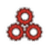

Tim Mekanik
Laporan harian mekanik
Status produksi, setup, trial mould, dan troubleshooting.

Laporan harian, checksheet mesin, pedoman kerja, dan riwayat perbaikan untuk UBS1 dan UBS3 — dibuka langsung dari HP, tanpa buku catatan.
Pelaporan untuk Tim Mekanik, Tim Workshop, dan Setup Labeling di UBS1 dan UBS3. Data tersimpan saat itu juga dan dapat dilihat shift berikutnya.
Status produksi, setup, trial mould, dan troubleshooting.
Log kerja fabrikasi dan tooling Workshop.
Form yang sama dengan Workshop — pilih panel Labeling di dalamnya.
Simpan tautan ini di layar utama HP untuk akses cepat. Data diperbarui otomatis. Hubungi Adhit apabila terdapat kendala.
Berbeda dari laporan harian: checksheet mencatat angka parameter mesin yang harus selalu berada dalam standar, bukan kejadian atau kendala.
Pilih mesin terlebih dahulu, kemudian pilih Preventif (khusus EBM; 7 item, sekali sehari) atau Parameter Proses (numerik, 3 kali per shift, tersedia untuk EBM dan IMM). Apabila QR sudah terpasang di panel mesin, pindai langsung untuk melewati pemilihan mesin.
Ketuk dokumen untuk membacanya langsung di halaman ini. Versi PDF dapat diunduh dari dalam tampilan.
Pedoman kerja 8 jam, kegiatan siaga, penerimaan mesin dari Tim Setup, dan penilaian.
Pedoman setup mesin EBM, penekanan rapi dan catat, serah terima, dan penilaian.
Denah 28 mesin, pembagian Tim 1 dan Tim 2, serta zona pembelajaran IML dan robot.
Denah 25 mesin, pembagian lini Backline dan Frontline, serta zona fleksibel.
Penelusuran masalah berulang: riwayat lengkap per mesin dan per mould, dari semua jenis laporan.
Analisis downtime per mesin, performa individual, dan perbandingan antar shift menyusul setelah data terkumpul cukup.
Lebih dari 50 mesin EBM dan IMM berjalan tiga shift nonstop. Rotasi grup berganti otomatis setiap minggu dengan siklus tiga minggu.
Menjaga output produksi dengan menekan angka reject melalui pengaturan parameter proses dan perbaikan yang berkaitan dengan kualitas produk, pada mesin EBM maupun IMM. Pada lini yang menggunakan robot, termasuk pengaturan parameter robot dan perbaikan end tool yang misalignment.
Di luar tanggung jawab: kerusakan berat seperti hidraulik, perakitan mesin, dan chiller menjadi tanggung jawab MTC. Kendala mould atau tool dieskalasikan ke WS. Kendala yang rumit dilaporkan kepada Foreman.
Baca memo pedoman regulerMenangani pergantian model, meliputi pemasangan dan pelepasan mould serta pengaturan ulang parameter untuk produk baru. Apabila terdapat kendala, eskalasi kepada WS untuk mould atau tool, dan kepada MTC untuk mesin.
Baca memo pedoman setupMengawasi laporan tim, membimbing anggota tim, memimpin penanganan kendala yang rumit di lapangan, serta menyusun analisis permasalahan harian untuk dibahas dengan atasan. Foreman adalah jenjang pelaporan pertama bagi mekanik reguler sebelum eskalasi lebih lanjut.
Mengirim WhatsApp ke Adhit dengan format laporan yang sudah disiapkan
Form tidak terbuka, data tidak tersimpan, atau usulan perbaikan